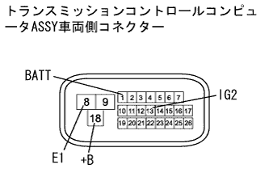
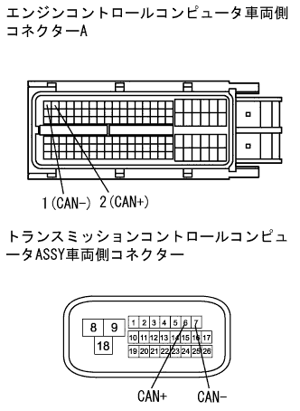

DTC U0101/A2 ECT ECU Communication Malfunction |
| DTC No. SAE/TCCS | DTC Detection Condition
| Inspection Area |
|---|---|---|
| U0101/A2 |
|
|
| Step 1 | Read DTC |
Connect SST (TaSCAN) to DLC3.
Turn the IG ON and check for DTCs following the SST (TaSCAN) screen display. (see)
| Result | Proceed to |
|---|---|
| U0101/A2 is displayed | A |
| Other than U0101/A2 is displayed | B |
|
| ||||
| A | |
| Step 2 | Inspect Transmission Control Computer Assembly (Power Source Voltage) |
Disconnect the transmission control computer assembly connector.
Turn IG ON.
 |
Using SST (Toyota electrical tester), measure the voltage between the terminals.
| Tester Connection (Terminal Name) | Condition | Standard |
|---|---|---|
| 18(+B) - 8(E1) | Always | 11 to 14V |
| 1(BATT) - 8(E1) | Always | 11 to 14V |
| 13(IG2) - 8(E1) | IG ON | 11 to 14V |
|
| ||||
| OK | |
| Step 3 | Inspect Wire Harness and Connector |
ReferenceDisconnect connector A of the engine control computer.
 |
Using SST (Toyota electrical tester), measure the resistance between the terminals. (For Terminals of ECU, see)
| Tester Connection (Terminal Symbol) | Condition | Standard |
|---|---|---|
| A1(CAN-) - 7(CAN-) | Always | Below 1 Ω |
| A2(CAN+) - 6(CAN+) | Always | Below 1 Ω |
| Tester Connection (Terminal Symbol) | Condition | Standard |
|---|---|---|
| A1 (CAN-) and 7 (CAN-) - Other terminals and body ground | Always | 10k Ω or higher |
| A2 (CAN+) and 6 (CAN+) - Other terminals and body ground | Always | 10k Ω or higher |
|
| ||||
| OK | |
| Step 4 | Replace Engine Control Computer |
Replace the engine control computer and complete each registration procedure. (see)
| NEXT | |
| Step 5 | Check DTC Output |
Check for DTCs.
| Result | Proceed to |
|---|---|
| DTC normal | A |
| U0101/A2 is output again | B |
|
| ||||
| A | ||
| ||